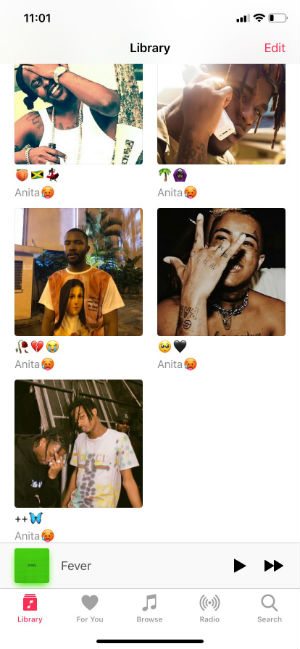
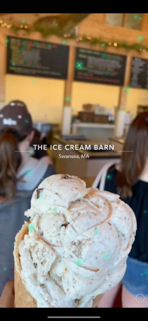

My name is Anita Olugbode I am a student at the University of Rhode Island and I am majoring in Computer Science. Originally, I had went to a college named Emmanuel College which resided in Boston. I had trasnferred into URI my second semester of my freshman year. Two of my many interests include eating and listening to music. My favorite food would probably be a burrito especially from Bajas Taqueria. I love most categories of music. My favorite would be trap, r&b, and afro beats.
  Back to home page